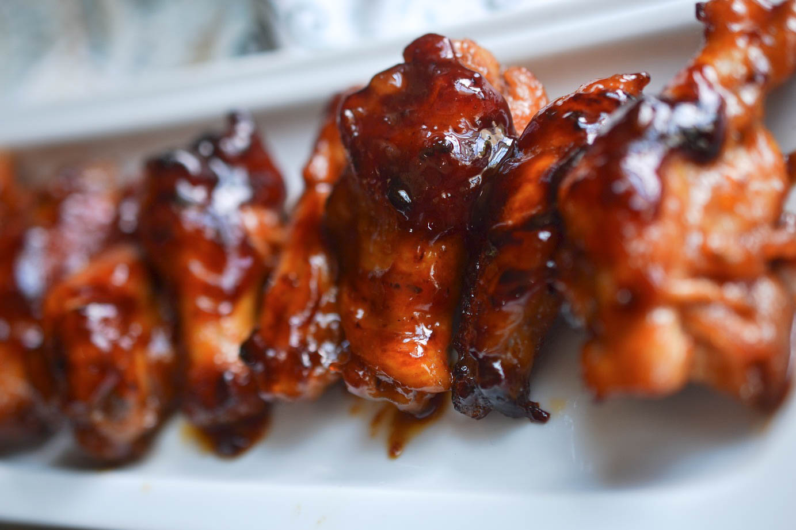

Smoked Burnt End Sweet BBQ Wings
Home

Description
Smoked wings that are easy, quick, and tasty!
Ingredients
- 4 lbs raw Chicken Wings
- BBQ Rub of Your Choice
- 12 oz BBQ Sauce
- Honey
- Suggested wood chips: Apple
Instructions
- Season raw chicken wings generaously with your favorite BBQ rub
- Place approximately 2 pounds per smoker rack (15-20 wings) and smoke for 45 minutes at 275°F
- Remove chicken wings from smoker. Toss in your favorite BBQ sauce
- Place wings on top rack of smoker with a disposable tray (or drip pan) below. Drizzle honey evenly over wings
- Cook for an additional 15-20 minutes until crisp and the internal temperature is 175-180°F
- Remove wings and serve hot